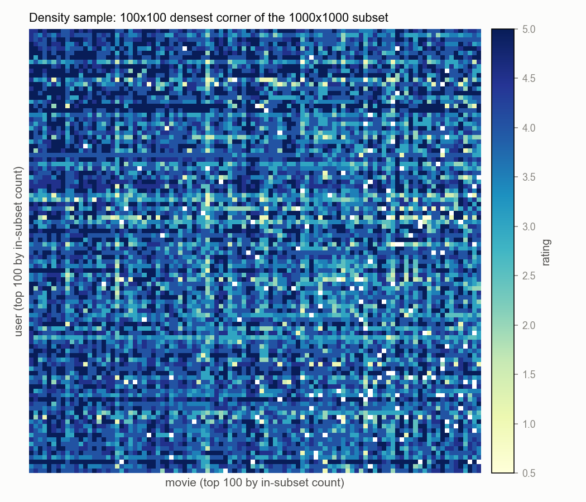
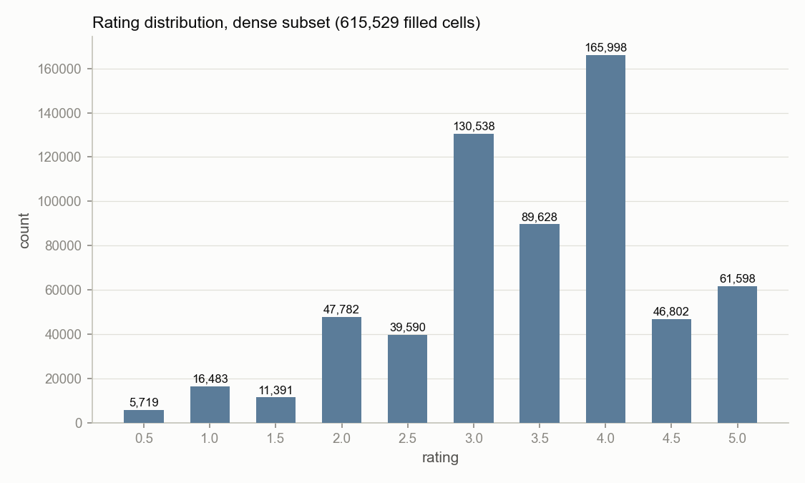
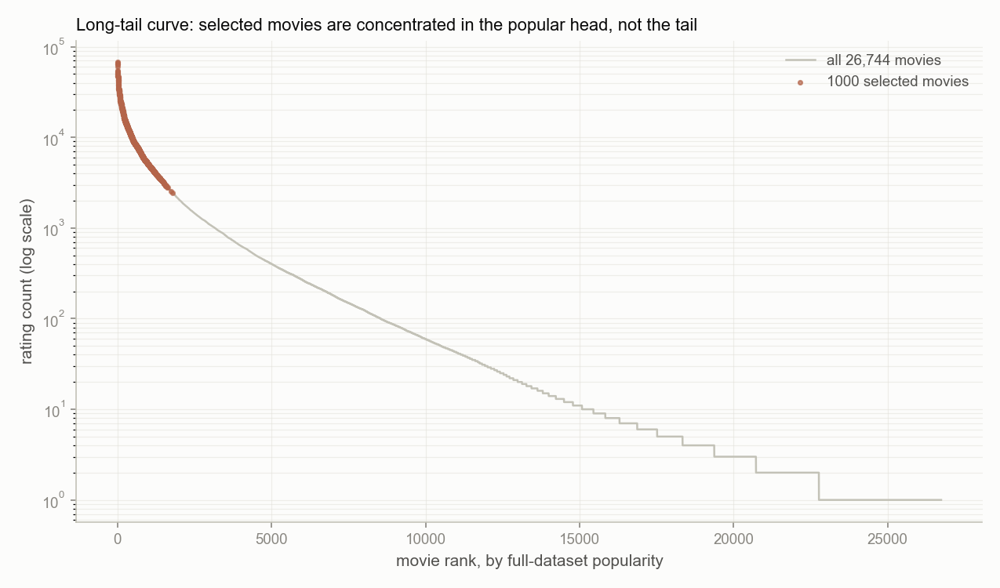
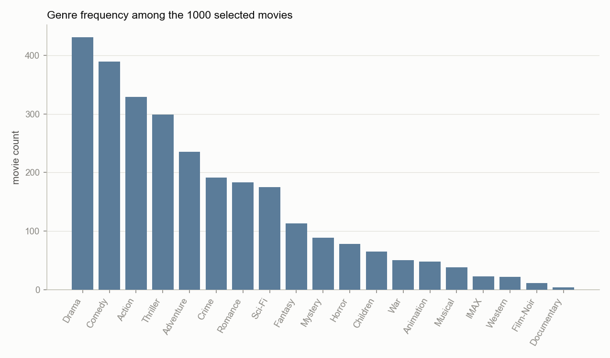
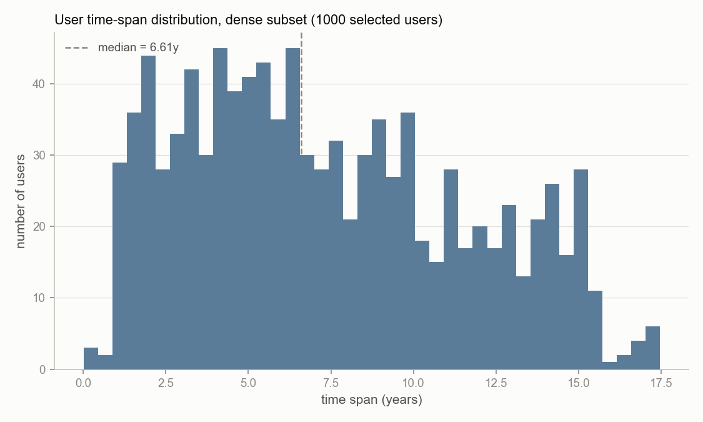

01 · 4-Number-System RBM — Research Overview
MovieLens 20M · Comparative Study
Compare four number systems on RBMs: predict ratings, discover distinct Hidden Features.
Baseline
Flat Euclidean dot product
QuestionHow far can standard geometry go?
Temporal Lens
Phase angle captures periodic cycles
QuestionWhat temporal patterns emerge from phase angles?
Hierarchy Lens
Exponential volume fits tree structures
QuestionWhat structural hierarchy appears in hyperbolic space?
Noise Lens
Membership functions absorb uncertainty
QuestionHow do membership functions respond to noisy ratings?
Data Selection Methodology
Here’s what 61.55% density looks like

Rating distribution peaks at 3.0 and 4.0

Selected movies sit in the popular head

All 19 genres represented

Most users span 5+ years
